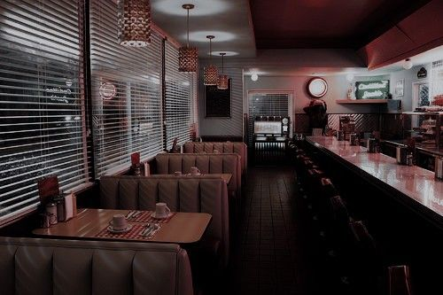

Nesse exato momento, me encontro em uma lanchonete na companhia de Ash e Jeffrey, ocupada em devorar alguns lanches suspeitosamente gordurosos e em esvaziar copos de refrigerante.
O encontro, diga-se de passagem, foi totalmente acidental. Eu só estava passando em frente ao lugar, exausta depois de um dia inteiro de trabalho, contando mentalmente os segundos até chegar em casa e oficializar um compromisso sério, estável e duradouro com a minha cama. No entanto, assim que me viram, os dois avançaram na minha direção com uma energia essa que, ouso dizer, parecia ter sido emprestada diretamente do inferno.
E não, nem é preciso muito esforço para identificar quem, entre eles, ocupava o cargo de “entidade demoníaca” da situação.
Eles quiseram saber o que eu fazia por ali, e eu respondi exatamente o que já havia deixado claro momentos antes: sobrevivendo. Em seguida, fui eu quem passou a interrogá-los, questionando o motivo de não terem aparecido na escola, já que, em momento algum do dia, dei sinal de vida deles pelos corredores.
Jeffrey, então, assumiu aquela expressão clássica que denuncia a aproximação da idiotice. Curiosamente, porém, a pérola não saiu da boca dele. Veio de Ash, com a segurança de quem realmente acredita no que diz.
A justificativa não poderia ter sido menos razoável ou mais absurda. Ele soltou, sem o menor constrangimento: “Queeee escola o quê, pô? Eu faltei, não sou escravo!”.
Diante disso, permaneci encarando o rosto dele por longos e dolorosos minutos, travando uma batalha moral interna entre duas opções igualmente tentadoras: me despedir educadamente e ir embora ou simplesmente estapear o Ash e considerar aquilo um serviço comunitário. A luta, no entanto, não chegou a um desfecho, porque ambos decidiram me convidar para entrar na lanchonete, comer alguma coisa e “relaxar”.
E, bem, aqui estou.
Pelo menos o atendimento é decente e a comida cumpre sua função. Até o momento, não tenho do que reclamar, além, é claro, das companhias.
Nós passamos um bom tempo conversando sobre absolutamente qualquer coisa que surgisse à mente, num fluxo caótico de assuntos que variava entre o Ash tentando executar cinco mortais para trás, convencido de que era plenamente capaz só porque viu um vídeo aleatório no YouTube de alguém conseguindo (adendo: ele não conseguiu), e o Jeffrey contando piadas tão específicas e mal formuladas que eu levo, em média, uns quatro anos para entender. Isso quando entendo. Em geral, só ele é fluente na própria língua.
Apesar desse festival de leves colapsos cognitivos, a conversa não se sustentou apenas em temas que flertavam com a divergência mental. Havia, aqui e ali, pequenos lapsos de lucidez. Poucos, mas existentes. Em um desses raros momentos, Jeffrey me perguntou pelas meninas: onde estavam, como se sentiam, se estava tudo bem.
Expliquei que elas tinham ficado juntas na casa da Kenda, tentando se recompor depois de toda merda que aconteceu na escola, um episódio que, diga-se de passagem, foi um verdadeiro desastre.
Voltando um pouco no tempo, o dia escolar começou quaaaaaase como sempre: professores despejando conteúdos intermináveis, uma avalanche de atividades teóricas e práticas, sem contar os deveres e trabalhos de casa que parecem se multiplicar sozinhos. Em seguida veio a aula de educação física, que eu normalmente aproveito como um breve “intervalo de paz” para estudar em silêncio. Só que, dessa vez, a tranquilidade não teve chance.
Mais uma vez, tive o privilégio de assistir minhas amigas protagonizando um confronto intenso em uma partida de basquete que mais parecia uma de final de campeonato. E quando digo intenso, quero dizer intenso do começo ao fim.
Kenda e Jellie formaram dupla contra a Ashley, que contava apenas com o apoio disperso dos outros colegas na quadra.
As duas jogaram absurdamente bem, com entrosamento e estratégia, mas Ashley estava simplesmente em outra prateleira. Em outra realidade, talvez.
Poooorra, a mulher simplesmente virou um placar de 98 a 70 para um improvável 98 a 101. Eu sabia que ela era fissurada no basquete, vivia acompanhando os jogos do time dela, mas jamais imaginei que ela jogasse tão bem assim.
Ela era simplesmente espetacular.
Depois da partida, eu e elas seguimos direto para a biblioteca da escola. Minha intenção era simples e até um pouco otimista demais: encontrar algum livro que realmente me ajudasse a avançar nos estudos de língua francesa, já que eu estava me aventurando no maravilhoso e caótico mundo das línguas estrangeiras. O acervo até que impressionava, prateleiras e mais prateleiras cheias de opções, o tipo de lugar que passa a sensação de que com certeza você vai sair dali com algo útil em mãos.
Kenda, Jellie e Ashley, por exemplo, tiveram sorte. Encontraram livros interessantes que provavelmente dariam vontade de sentar no chão da biblioteca e começar a ler ali mesmo. Acabaram até alugando alguns.
Já comigo, o resultado foi bem infeliz.
Não achei absolutamente nada que prestasse ou que fosse minimamente útil para o que eu precisava. Para completar a humilhação, o sinal tocou pouco depois, encerrando qualquer chance de insistência. E, no fim, ficou por isso mesmo.
Tudo normal, né? Na teoria, sim. Na prática, nem de longe.
O verdadeiro problema começou quando eu estava prestes a sair da escola. Em um desses acidentes idiotas do cotidiano, acabei esbarrando em uma garota que, claramente, não estava nem um pouco interessada em civilidade. Sem trocar uma única palavra, ela me empurrou com força. Eu perdi o equilíbrio, caí no chão e bati o cotovelo de um jeito tão violento que até agora está dolorido.
Não demorou muito para eu perceber que aquela menina fazia parte de um grupo de babacas já conhecidos por infernizar a vida alheia naquela escola. Um bando que parecia se alimentar do desconforto dos outros. Eles começaram a fazer piadas, rir alto, apontar, me humilhar no meio de todo mundo que ainda estava ali na hora da saída.
Doeu.
Doeu muito.
Doeu porque eu não tinha feito absolutamente nada para merecer aquilo. Porque ninguém acorda querendo ser exposto, ridicularizado e tratado como objeto de entretenimento. Esse tipo de humilhação não some fácil da memória. Pelo menos da minha, não vai. Eu sequer tinha qualquer tipo de proximidade com aquelas pessoas, mas também não dava para esperar bom senso vindo de gente tão imbecil. E bota imbecil nisso.
Aquela vaca teve a audácia de me puxar pelo braço machucado, agravando ainda mais a dor, enquanto falava sobre me levar para algo que eles chamavam de “quarto escuro da escola”. Eu não fazia a menor ideia do que aquilo significava, muito menos do que pretendiam fazer comigo ali dentro. E, sendo bem sincera, talvez seja melhor mesmo não saber.
Mas aí, a Ashley acabou intervindo e acertou um soco tão violento na garota que o impacto foi suficiente para quebrar o nariz dela. A partir daí, os outros dois garotos do grupo resolveram se meter, e pronto, a merda já tava feita. No meio do caos, Kenda praticamente nos ordenou a sair dali, e Jellie e eu acabamos indo direto para a minha casa.
Corremos sem olhar para trás, impulsionadas pelo medo e por uma preocupação constante que parecia nos perseguir a cada passo. Quando finalmente chegamos à minha porta, ficamos ali paradas por um bom tempo, conversando sem parar, tentando desesperadamente nos convencer de que tudo ficaria bem, mesmo sabendo, no fundo, que a situação já tinha deixado claro que não ficaria.
Era mais um exercício de negação do que qualquer outra coisa.
Depois de algumas horas de pura ansiedade, finalmente tivemos algum sinal de vida. Kenda mandou mensagens para Jellie dizendo que ela e Ashley estavam bem e que havia levado Ashley para sua casa, onde poderia cuidar melhor dela.
Mesmo assim, Jellie continuava inquieta. Decidiu ir até a casa da Kenda para ver tudo de perto e, antes de sair, sugeriu que eu descansasse um pouco e tentasse distrair a cabeça. Tentativa nobre, porém inútil. Obviamente, eu não consegui. Acabei mandando mensagem para Ashley, meio no desespero, querendo entender melhor o que tinha acontecido e, principalmente, confirmar se estava tudo realmente sob controle.
Ela me explicou que, no meio da confusão, elas acabaram desmaiando os três, o que resultou na suspensão das duas. Ashley saiu machucada, mas nada grave. Apesar dos ferimentos, estava bem dentro do possível.
Quando contei essa parte da história para Jeffrey e Ash, a reação dos dois foi quase uma representação perfeita de extremos opostos. Ash, sendo Ash, apenas caiu na risada, disse que achou tudo “maneiro” e ainda comentou que gostaria de ter estado lá para assistir àquela zorra de perto. Já Jeffrey, ironicamente, conseguiu demonstrar um raro momento de lucidez, reagindo com preocupação genuína diante de tudo o que tinha acontecido.
No fim, tudo tinha passado.
As vozes, a confusão, o conflito, tudo havia ficado para trás.
A culpa, no entanto, não.
Me senti horrível. De um jeito difícil até de nomear.
Desde então, pensamentos surgem e ressurgem na minha cabeça, insistentes, circulando. Eu não queria que Ashley tivesse feito aquilo, muito menos por minha causa. Ela e Kenda acabaram suspensas, e a responsabilidade desse desfecho pesa inteiramente sobre mim.
Ashley tentou aliviar a situação. Disse que estava tudo bem, que eu precisava parar de pensar tanto, que agora tudo já tinha se resolvido. Chegou, inclusive, ao feito absurdo de rir do ocorrido, soltando piadas aqui e ali, retomando aquele jeito doce, leve e cheio de energia que nunca abandonou desde o dia em que a conheci.
Mas eu não queria que ela tivesse ido tão longe.
E, mesmo assim, ela escolheu me proteger.
Francamente, ela me deixa sem nem o que dizer, às vezes.
Agora, mais do que nunca, me deixa sem saber o que pensar.
Será que ela é tão indiferente às consequências a ponto de agir desse jeito?
Ou será que, no fundo, ela me vê como fraca, alguém que a colocou naquela situação e sequer conseguiu se defender sozinha?
Ou talvez eu esteja apenas sendo uma idiota, me perdendo em questionamentos intermináveis sobre algo que, em teoria, deveria ser fácil de entender?
É, talvez eu não descubra tão cedo. Porque vou estar bem mais ocupada com a minha máquina de lavar muito em breve, já que o imbecil do Ash resolveu jogar o refrigerante inteiro dele em mim na justificativa de “me acordar” pra vida, me sujando toda como consequência.
Jeffrey, como era de se esperar, apenas desabou em gargalhadas, claramente apreciando o espetáculo alheio.
Alguém quer morrer hoje.
← Sonhar e sonhar Retornar →